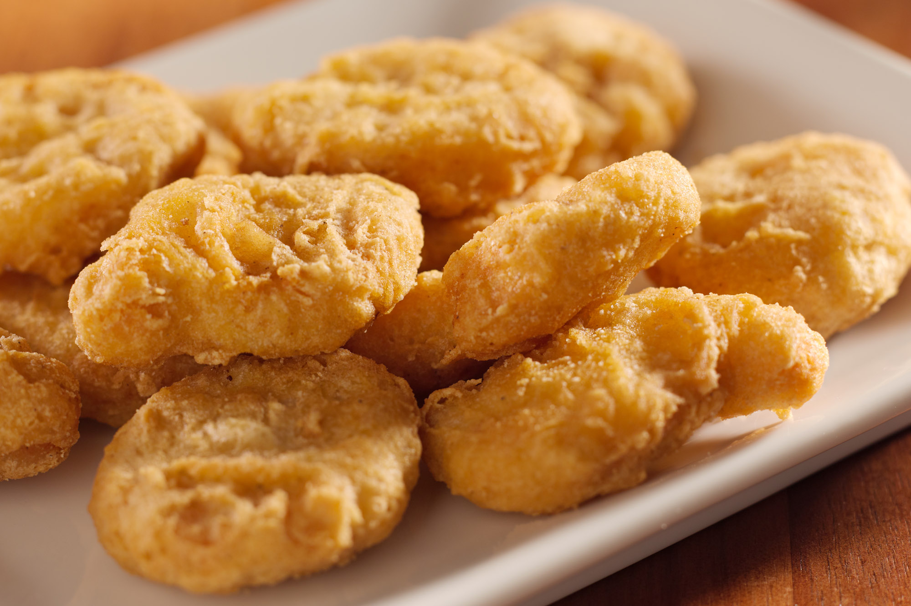

Homemade Chicken Nuggets Recipe
Chicken nuggets are very easy to make with a few ingredients and are available in most fast food restaurants. They look yummy and taste so great. My favorite is spicy one with ketchup.
Ingredients :
- 1/2 cup all-purpose flour
- 1 teaspoon granulated gralic
- salt and groud black pepper
- 2 boneless skinless chicken breasts, cut into 1 1/2 inch pieces
- 1 cup prepared breadcrumbs
- 1 large egg
- 1 cup vegetable oil
Directions :
- Place the flour in a resealable plastic bag and season with the garlic, 1 teaspoon salt and 1/4 teaspoon pepper . Place the chicken pieces in the bag with the flour and toss to coat (work in batches). Transfer the breadcrumbs to a rimmed plate, season with salt and pepper and set aside 🥰.
- Whisk the egg and 1 tablespoon water in a medium bowl. Remove a piece of chicken from the flour, dip in the egg mixture, then the breadcrumbs, gently pressing the crumbs into the chicken, and set on a clean plate. Repeat with the remaining pieces of chicken 👌.
- Heat the vegetable oil in a large frying pan over medium-high heat 🔥. Add the chicken pieces to the pan (work in batches if needed) and brown on each side, about 8 minutes total ⏲️. Use a spatula to transfer the chicken nuggets to a paper-towel-lined plate 🍽️. Salt while hot and serve 😋😋.